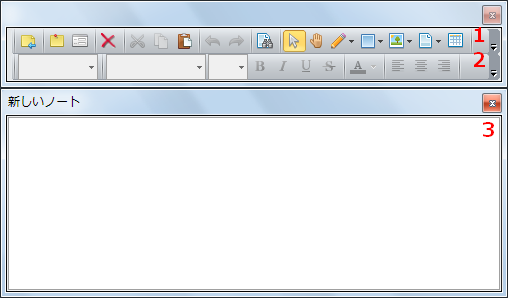

付箋ノートを使う
「付箋」機能はノートを付箋表示する機能です。 ノートをメイン画面から切り離してコンパクトに表示できます。
付箋ノートを作成する
付箋ノートを作成するには以下のいずれかの操作を行います。
- メインメニューの「ファイル」>「付箋ノートを作成する」を選択
- メインツールバーの「付箋ノートを作成する」をクリック
- タスクトレイアイコンのコンテキストメニューの「付箋ノートを作成する」を選択
新しいノートが作成され付箋ウィンドウで表示されます。
既存のノートを付箋ノートとして開く
既存のノートを付箋ノートとして開くには以下の操作を行います。
- ノートリストペインで右クリックして「付箋として開く」を選択
ノートエディタで開いているノートを付箋ノートとして表示する
ノートエディタで開いているノートを付箋ノートとして表示するには以下のいずれかの操作を行います。
- メインツールバーの「付箋として表示」を選択
- ノートエディタのタブのコンテキストメニューの「付箋として表示」を選択
ノートエディタのノートが閉じられ，付箋ウィンドウでノートが表示されます。
付箋ノートをノートエディタで表示する
付箋ノートをノートエディタで表示するには以下の操作を行います。
- 付箋ノートのメインツールバーの「メインウィンドウで表示」を選択
付箋ウィンドウが閉じられ，メインウィンドウのノートエディタでノートが開かれます。
付箋ノートを閉じる
付箋ノートを閉じるには以下の操作を行います。
- 付箋ウィンドウ右上の×ボタンをクリック
付箋ノートを前面に表示する
付箋ノートを前面に表示するには以下のいずれかの操作を行います。
- メインツールバーの「付箋を表示」をクリック
- タスクトレイのMochaNoteアイコンを右クリックして「付箋を表示」を選択